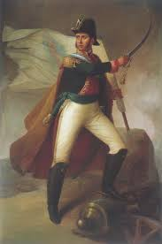
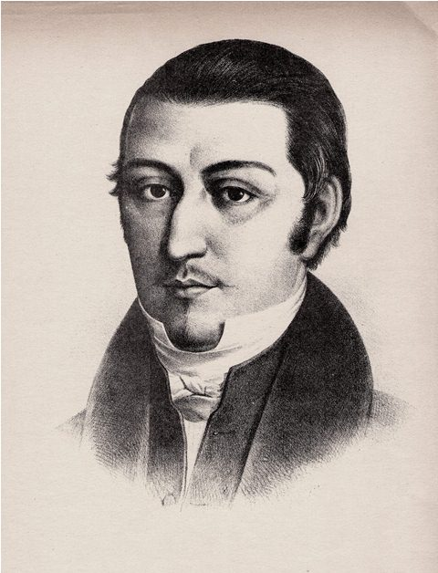
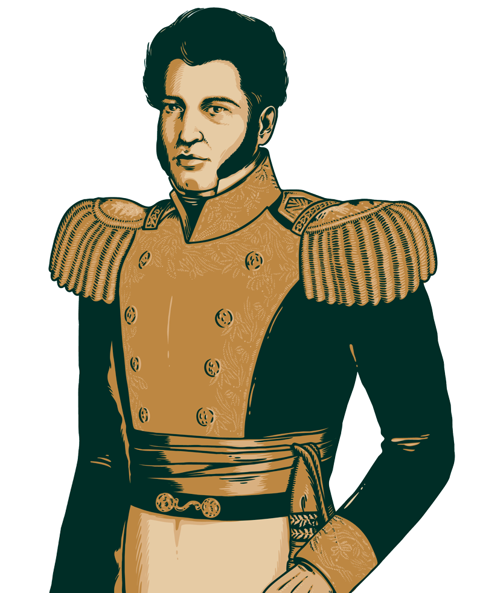
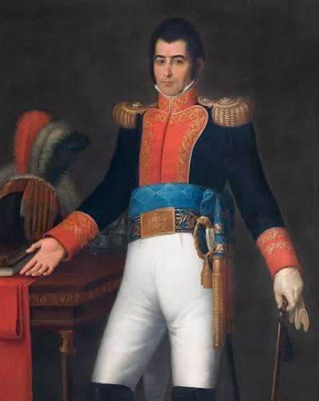
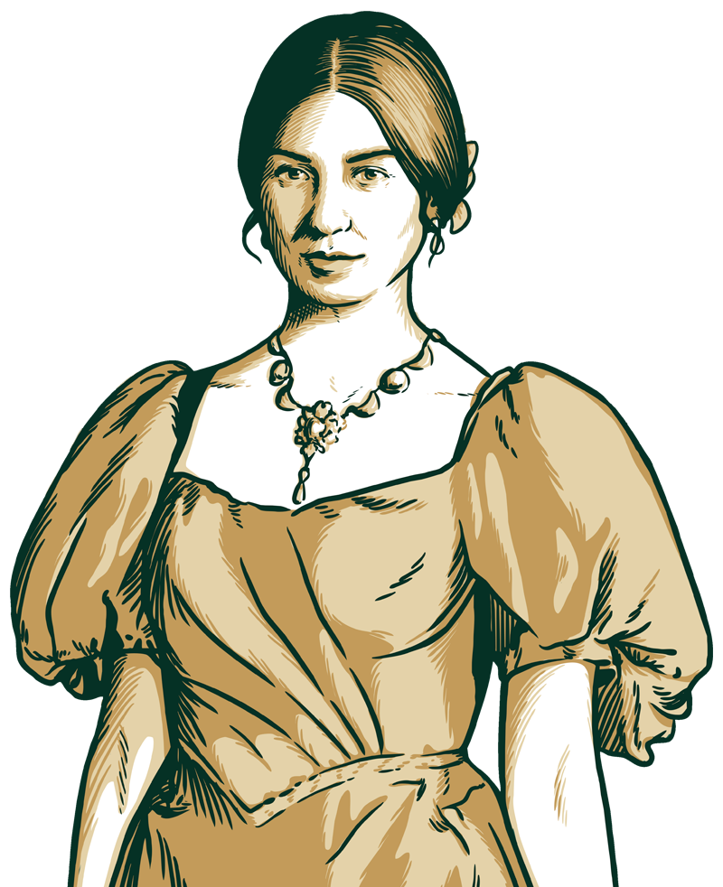
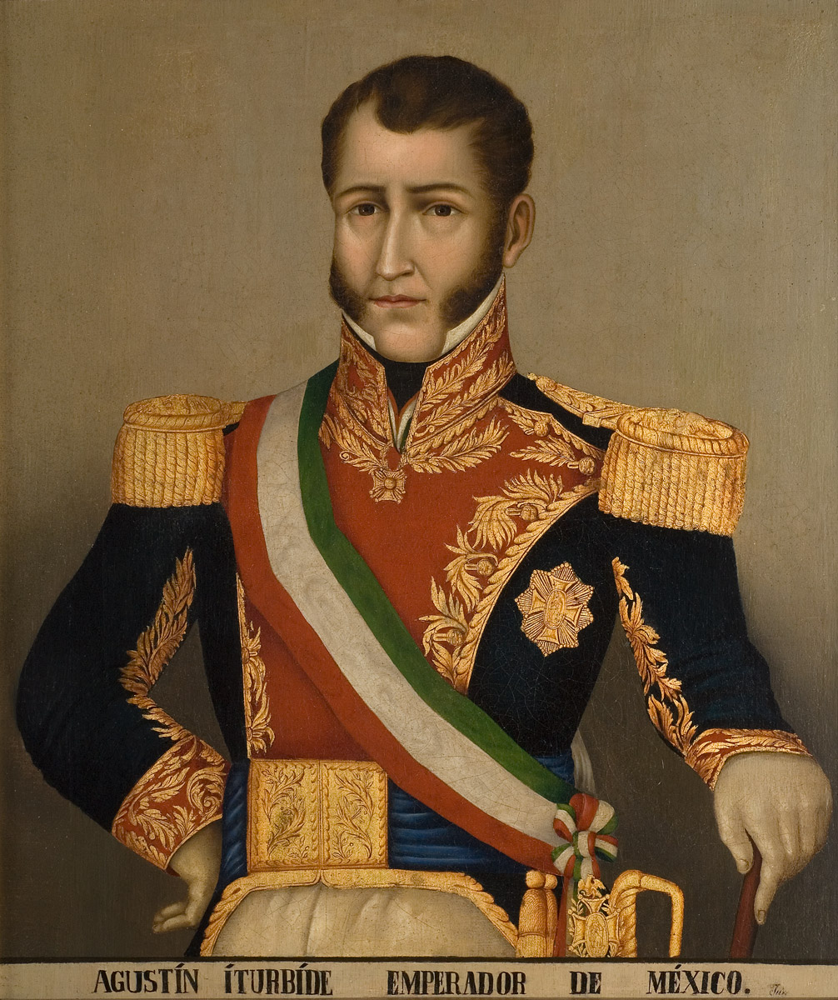

SEPTIEMBRE
"Acontecimientos mas relevantes del mes patrio"

"Acontecimientos mas relevantes del mes patrio"
Fue un insurgente y sacerdote mexicano. Nació el 8 de mayo de 1753 en la hacienda de San Diego de Corralejo, Pénjamo, Guanajuato. Cursó estudios en el Colegio de San Nicolás, Valladolid (actual Morelia), del que llegó a ser rector.
En 1778, fue ordenado sacerdote y en 1803 se hizo cargo de la parroquia de Dolores, Guanajuato. Se preocupó por mejorar las condiciones de sus feligreses, casi todos indígenas, enseñándoles a cultivar viñedos, la cría de abejas y a dirigir pequeñas industrias de loza y ladrillos.
Descubiertos los conjurados, la insurrección se trasladó a Querétaro donde se reunió con Ignacio Allende. El 16 de septiembre de 1810, llevando como estandarte a la virgen de Guadalupe, lanzó el llamado grito de Dolores que inició la gesta independentista y, acompañado de Allende, consiguió reunir un ejército formado por más de cuarenta mil personas. Tomaron Guanajuato y Guadalajara, sin embargo, decidieron no ocupar la ciudad de México.
El 11 de enero de 1811, Hidalgo fue derrotado cerca de Guadalajara por las fuerzas realistas. Escapó hacia el norte, pero fue capturado y condenado a muerte. Su cabeza, junto a la de Allende y a la de otros insurgentes, se exhibió como escarmiento en la alhóndiga de Granaditas de Guanajuato.

Un 21 de enero, pero de 1769, nació en San Miguel el Grande, hoy San Miguel de Allende, Guanajuato, Ignacio José de Allende y Unzaga. Hombre criollo de gran carácter, proveniente de buena familia, hábil en la caballería, el toreo y la charrería.
Militar del ejército español que se unió a la conspiración y fue co-líder del ejército insurgente en el inicio de la lucha
En 1795, comenzó su carrera militar ingresando al ejército y en 1797 obtuvo el grado de capitán. Durante sus constantes traslados militares fue conociendo y relacionándose con distintos miembros de grupos liberales y masones, los cuales compartían sus pensamientos independentistas y de libertad.
En 1809, formó parte de la conspiración fallida de Valladolid, dando como resultado la captura de sus dirigentes y obligándolo a escapar a San Miguel. Junto con Juan Aldama, convenció al cura Miguel Hidalgo para encabezar un levantamiento que se llevaría a cabo a finales de 1810.

Esposa del corregidor de Querétaro. Alertó a los insurgentes de que su plan había sido descubierto, lo que obligó a adelantar el inicio de la lucha
Muy joven queda huérfana, por lo que quedó a cargo de su hermana María Sotero Ortiz. Cuentan que su hermana, al no tener los medios para sostenerla, pidió dinero prestado a varias personas para que pudiera vivir como pensionista en el Colegio de San Ignacio de Loyola -el célebre Colegio de las Vizcaínas- en donde estuvo aproximadamente dos años.
Es aquí donde conoce al que sería su esposo, Miguel Domínguez, quien visitaba asiduamente a la junta directiva del colegio, ya que era el apoderado legal de una persona que había legado un sustancial recurso económico para el sostenimiento del plantel. En 1791 se casaron y procrearon 14 hijos.

Militar que participó en la conspiración y acompañó a Hidalgo y Allende en el estallido del movimiento
Nació en San Miguel el Grande, Guanajuato, y fue hermano del licenciado Ignacio Aldama. Siguió la carrera de las armas, y al estallar la Guerra de Independencia, era capitán del regimiento de caballería de las milicias de la Reina, en su pueblo natal, donde también vivían su hermano Ignacio y el capitán Allende.
Éste lo invitó, en 1809, a participar en la conspiración que en Valladolid dirigieron García Obeso y Michelena.
Asistió a las juntas secretas hasta que la conjura fue descubierta en el mes de diciembre.Con su hermano Ignacio participó en las juntas secretas de Querétaro, en 1810, en la casa del corregidor Domínguez, así como en las juntas que en San Miguel presidiera su hermano. Estuvo en contacto también con el padre Hidalgo en Dolores.
El 10 de septiembre de ese año, la conspiración de Querétaro fue descubierta por la denuncia que de ella hiciera el capitán Joaquín Arias, de Celaya, que había sido invitado igualmente por Allende a participar en ella.

Sacerdote y militar conocido como el "Siervo de la Nación". Tomó el liderazgo tras la muerte de Hidalgo, organizó un ejército disciplinado y redactó los Sentimientos de la Nación
Nació en la ciudad de Valladolid, hoy Morelia, el 30 de septiembre de 1765.
Morelos provenía de una familia humilde. Sin embargo, a una edad temprana, Morelos aprendió de su madre las primeras letras. Además, siendo aun muy joven, trabajó conduciendo una recua de la Ciudad de México a Acapulco.
En 1811 Morelos marchó a Chilpancingo y más tarde a Izúcar, Puebla, y a Taxco, Guerrero. Su intención era preparar la defensa de Cuautla, importante población asediada por el virrey Calleja. Después de 72 días de asedio realista abandonó la plaza heroicamente causando grandes bajas al enemigo.
Después de tomar Acapulco, en septiembre de 1813, Morelos convocó el Primer Congreso Independiente, en Chilpancingo, cuyo resultado fue la Constitución de Apatzingan (1814) que declaró la independencia de México.

Insurgente clave que mantuvo viva la resistencia en el sur de México durante los años más difíciles de la guerra
Vicente Guerrero nació en Tixtla (actual estado de Guerrero) el 10 de agosto de 1782 y fue fusilado en Cuilapan –Oaxaca– en 1831.
Siendo aún muy joven, Vicente Guerrero se dedicó a la armería y al movimiento de la Independencia. Desde el principio destaca como militar en 1812 en la batalla de Izúcar (Puebla).
Luego, acompañó a José María Morelos en la toma de Oaxaca y recibe de éste la encomienda de organizar la rebelión en el sur de Puebla. Vicente Guerrero se dedico a fabricar pólvora, fundir artillería y aumentar sus tropas, lo que le valió sonados triunfos militares.
En 1815 condujo y resguardó al Congreso de Chilpancingo a Tehuacán. Después de la muerte y la prisión de los principales caudillos, Vicente Guerrero continuó atacando a los realistas.

Militar y líder insurgente tenaz en la zona de Veracruz, quien más tarde se convertiría en el primer presidente de México
1786-1843:Hijo de Manuel Fernández y de Alejandra Félix, José Miguel Ramón Adaucto Fernández y Félix nació el 29 de septiembre de 1786 en la Villa de Tamazula, provincia de Nueva Galicia, hoy Durango (otros señalan el 16 de septiembre del año de 1785).
En 1811 abandonó sus estudios debido a que abrazó la causa independentista, uniéndose a las fuerzas de José María Morelos y Pavón. Por su valentía y arrojo Victoria fue ascendido al grado de coronel por Juan Nepomuceno Rosains, fue entonces cuando adoptó otro nombre, con el que sería famoso: Guadalupe Victoria, quizás porque era miembro de Los Guadalupes, o tal vez recordando a la Virgen de Guadalupe, patrona y protectora de los insurgentes, y a la victoria que con tanta convicción perseguía y que estaba seguro de alcanzar. Su nuevo nombre fue tolerado por el propio Morelos.

Periodista y financiera de la insurgencia que apoyó la causa secreta de los insurgentes
Leona Vicario no pudo haber nacido en un año más significativo que 1789, -estallido de la Revolución Francesa-, en la ciudad más importante del virreinato de la Nueva España y en el seno de una familia integrada por un padre español peninsular y una madre descendiente de la nobleza indígena acolhua.
En el momento en que estas ideas bullían en la cabeza de Leona, en el poblado de Dolores estalló la insurrección de 1810, encabezada por Miguel Hidalgo.
Fue entonces que “burlando la sagacidad de las autoridades, Leona Vicario se puso en comunicación con los independientes, y con los que en la capital del virreinato les eran adictos, y se ocupó en despachar correos para el campo insurgente, avisando cuanto en México pasaba, y logrando con lo eficaz y oportuno de sus noticias, evitar no pocas sorpresas y desastres a la naciente revolución.

Exmilitar realista que pactó con Vicente Guerrero a través del Plan de Iguala para lograr la consumación de la independencia en 1821
Agustín de Iturbide nació en Valladolid (hoy Morelia) el 27 de septiembre de 1783 y murió en Padilla, Tamaulipas, el 19 de julio de 1824.
Fue el hijo criollo de un inmigrante vasco de ancestros nobles y de una dama michoacana. A los 17 años ingresó al regimiento de infantería provincial de su ciudad.
En 1813 el virrey Félix María Calleja lo ascendió a coronel y le dio el mando del regimiento de Celaya. Tiempo después, Cedieron a Agustín de Iturbide el control militar supremo de la intendencia de Guanajuato, uno de los principales escenarios de la rebelión.
